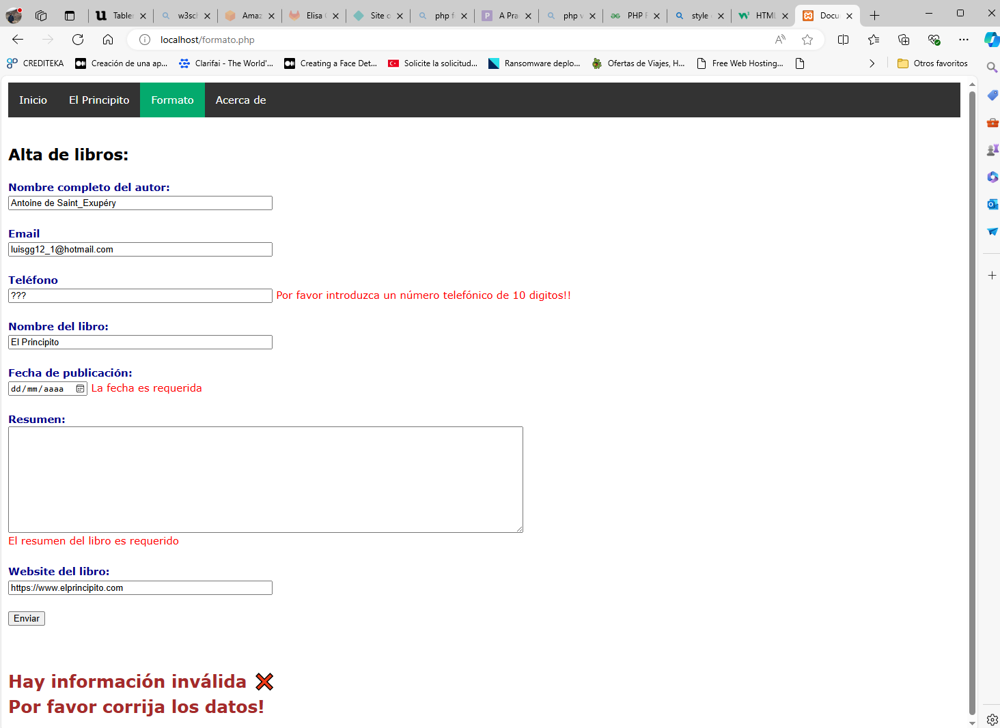

Computación Cliente Servidor - Actividad 2
Nota.- Para acceder al formato y validación solicitados en la actividad 2, favor de dar clic en la liga correspondiente a Formulario en el menú principal al inicio de esta página.
El objetivo de la actividad es realizar una página web utilizando Javascript con un formulario que se debe validar.
Los requisitos mínimos solicitados, así como su cumplimiento, se relacionan a continuación:
- El formulario debe utilizar etiquetas HTML5.
Ver archivo formulario.html
- El formulario contendrá campos de por lo menos 5 tipos diferentes (por ejemplo, texto, fecha, contraseña, etc.).
Se utilizaron campos de: texto, email, teléfono, fecha y url.
- El formulario debe tener la funcionalidad necesaria para que existan al menos dos comprobaciones en Javascript, para que no sean posibles en HTML5. Por ejemplo, se pueden validar correos electrónicos, direcciones de sitios web, formato del DNI español con su letra, etc.
Todos los campos fueron validados (texto, email, teléfono, fecha y url)
Cuando se entregue el formulario se deberá:• Si había algún campo erróneo, informar de los errores detectados y redirigir al usuario al formulario para que lo pueda cumplimentar debidamente.
La siguiente imagen muestra los errores detectados.
• Si todos los campos eran correctos, generar un informe con las validaciones realizadas y mostrarlo por pantalla.
La siguiente imagen muestra el informe generado al final del formulario.

- Al final del código se incluirá un comentario de no más de 200 palabras que explique el funcionamiento del código implementado.